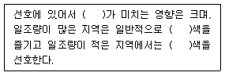
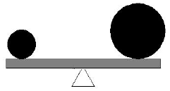
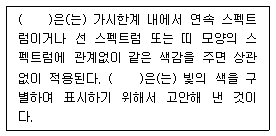
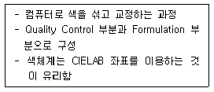
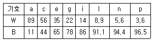

컬러리스트기사 (2011-03-20 기출문제)
1과목: 색채심리 마케팅
1. 기업이 표적시장을 대상으로 원하는 결과를 얻을 수 있도록 활용하는 총체적인 마케팅 수단은?
- 표적 마케팅
- 시장 세분화
- 마케팅 믹스
- 제품 포지셔닝
(정답률: 10%)

2. 지역색 (local color)에 대한 설명으로 거리가 먼 것은?
- 특정 지역에서 추출된 색
- 특정 지역의 하늘과 자연광을 반영하는 색채
- 특정 지역의 흙, 돌 등에 의해 나타나는 색
- 특정 지역의 사람들이 선호하는 색
(정답률: 알수없음)
3. 다음 중 색채와 공감각에 대한 설명 중 틀린 것은?
- 소리를 색채와 함께 공감각적으로 인식하면 낮은 음은 밝고 강한 채도의 색을 느끼게 한다.
- 좋은 냄새는 맑고 순수한 고명도색, 나쁜 냄새는 어둡고 흐린 난색계를 연상하게 한다.
- 너무 밝은 명도의 색은 식욕을 일으키지 않는다.
- 공감각적 특성을 이용하면 보다 정확하고 강하게 메시지와 의미를 전할 수 있다.
(정답률: 알수없음)
4. 표본 추출의 설명으로 틀린 것은?
- 표본 추출은 편의가 없는 조사를 위해 미리 설정된 집단내에서 뽑아야 한다.
- 일반적으로 큰 표본이 작은 표본보다 정확도는 더 높지만 대신 시간과 비용이 증가된다.
- 일반적으로 조사대상의 속성은 다원적이고 복잡하기에 모든 특성을 고려하여 표본을 선정하는 것은 불가능하다.
- 표본의 크기는 대상 변수의 변수도, 연구자가 감내 할 수 있는 허용오차의 크기 및 허용오차 범위내의 오차가 반영된 조사 결과 확률을 고려하여 결정해야 한다.
(정답률: 알수없음)
5. 마케팅에서 소비자 생활유형을 조사하는 목적이 아닌 것은?
- 소비자의 선호색 조사
- 소비자의 가치관 조사
- 소비형태 조사
- 소비자의 행동특성 조사
(정답률: 알수없음)
6. 기억색을 설명하는 것으로 옳은 것은?
- 대상의 표면색에 대한 무의식적인 추론에 의해 결정되는 색채
- 대상물체의 색채가 변하지 않고 그대로 유지된다고 지각하는 것
- 대상을 물리적 실제와 다르게 지각하는 것
- 착시현상에 의해 일어나는 색 경험
(정답률: 알수없음)
7. 색채 정보 수집을 위해 가장 쉽게 적용되는 연구방법은?
- 패널 조사법
- 현장관찰법
- 표본조사법
- 실험법
(정답률: 알수없음)
8. 판매촉진을 위한 기업방침, 상품의 특성을 전달ㆍ확인시키고 라이프스타일을 결정하도록 홍보하기 위한 광고 매체 선택의 전략적 방향이 아닌 것은?
- 기업 및 상품의 존재를 인지시킨다.
- 현장감과 일치하여 아이덴디티(identity)를 얻어야한다.
- 소비자에게 컨센서스(consensus)를 얻을 수 있어야 한다.
- 정보의 DB화로 가격과 기능을 전달해야 한다.
(정답률: 알수없음)
9. 기업의 내부환경을 분석하고 외부환경을 분석하여 마케팅 전략을 수집하는 SWOT분석과정에 해당되지않는 것은?
- 기회
- 위협
- 약점
- 경쟁
(정답률: 알수없음)
10. 병원을 위한 색채적용 방법이 가장 바람직한 것은?
- 분만실은 밝은 청록색이 적당하다.
- 병실 천장에 생명을 상징하는 녹색을 적용하는 것이 효과적이다.
- 집중 치료실을 밝고 화사한 색조를 사용하는 것이 바람직하다.
- 실험실은 붉은 계열 색을 적용하는 것이 좋다.
(정답률: 알수없음)
11. 색채 선호에서 보이는 특성으로 옳은 것은?
- 제품의 특성에 따라 선호되는 색채가 고정적으로 나타난다.
- 한 개인의 색채선호는 변하지 않고 고정적으로 나타난다.
- 노인들은 청년보다 청색에 대한 선호가 두드러진다.
- 연령이 낮을수록 원색계열과 밝은 톤을 선호하는 경향이 있다.
(정답률: 알수없음)
12. 컬러 마케팅의 이론으로 적합하지 않은 것은?
- 컬러 마케팅의 궁극적인 목표는 제품의 판매를 늘리는 것이다.
- 글로벌화 된 현대 사회에 선진국에 성공한 제품의 색채는 어느 국가에서나 성공을 보장 받는다.
- 우리나라는 1990년대부터 컬러 마케팅 수단으로 삼아 제품 판매 경쟁에 돌입하였다.
- 컬러 마케팅에 있어 광고의 컬러 선정은 목표시장 집단의 색채 감성을 파악하여 이를 활용하여야 한다.
(정답률: 알수없음)
13. 다음 중 안전을 위한 표준색이 옳게 설명된 것은?
- 장비의 수리 및 조절의 주의신호 - 파랑
- 구급장비, 상비약 - 노랑
- 장애물, 경고 - 빨강
- 소방기구 - 녹색
(정답률: 알수없음)
14. 요하네스 이텐에 의한 계절의 연상과 배색 중 여름에 해당하는 것은?
- 밝은 톤으로 구성한다.
- 원색과 선명한 톤으로 구성한다.
- 갈색, 보라 등 어두운 색조로 구성한다.
- 차갑고, 후퇴, 희박성을 나타내는 회색 톤으로 구성한다.
(정답률: 알수없음)
15. 시장 세분화 기준의 분류가 잘못된 것은?
- 지리적 변수 - 지역, 인구밀도
- 심리분석적 변수 - 생활환경, 종교
- 인구통계적 변수 - 소득, 직업
- 행동분석적 변수 - 사용경험, 브랜드 충성도
(정답률: 알수없음)
16. 신문광고 매체의 특성에는 신뢰성, 안정성, 논리성 등이 있다. 다음 중 안정성에 대한 설명은?
- 신문에 대한 인식이 신문광고에 그대로 연결될 수 있다.
- 신문 독자의 90% 이상이 정기구독자로 그대로 연결될 수 있다.
- 신문은 정보로서의 가치가 높다.
- 상품에 대한 통계자료를 이용하여 자세한 내용을 알릴 수 있다.
(정답률: 알수없음)
17. 소비자의 구매심리과정에 해당하지 않는 것은?
- 가치(value)
- 욕망(desire)
- 흥미(interest)
- 기억(memory)
(정답률: 알수없음)
18. 컬러 마케팅의 직접적인 효과로 보기 어려운 것은?
- 브랜드 가치의 업그레이드
- 기업의 아이덴티티 형성
- 기업의 매출 증대
- 브랜드 기획력 향상
(정답률: 알수없음)
19. 색채 시장조사 기법 중 서베이(Survey) 조사에 대한 설명으로 틀린 것은?
- 일반 소비자들의 제품구매 및 이용 상황에 대한 정보를 수집하고 분석하는 방법이다.
- 조사원이 직접 거리나 가정을 방문하여 조사하는 방법이다.
- 서베이 조사의 주목적은 시장 점유율의 변화와 마케팅 변화의 변수를 파악하는 것이다.
- 기업의 전반적 마케팅 전략수립의 기본 자료를 수집하기 위한 조사로 활용된다.
(정답률: 알수없음)
20. 다음 ()안에 들어갈 단어를 순서대로 가장 알맞게 나열한 것은?

- 지역정서, 장파장, 단파장
- 지역정서, 단파장, 장파장
- 기후, 장파장, 단파장
- 기후, 단파장, 장파장
(정답률: 알수없음)
2과목: 색채디자인
21. 무대 디자인의 용어와 사용 목적에 관한 설명 중 틀린 것은?
- 시노그라피(scenography) - 3차원의 제한된 공간에 4차원 공간의 리얼리티를 현실화하는 예술이다.
- 윙(wing) - 관객의 시각선 바깥에 있는 무대 옆쪽의 공간으로 관객에게 보여지는 무대 공간을 조절하는 데 쓰인다.
- 형식적 장치(formal setting) - 하나의 장치를 여러 장면에서 사용하며 장면마다 색채를 바꾸거나 위치를 바꾸어 놓는다.
- 프로시니엄 아치(proscenium arch) - 극장의 객석과 무대를 구분하는 사진들 모양의 장식 프레임으로 현대에서는 극장에서 무대 기계, 조명, 장치를 관객의 시야에서 숨겨주는 가림벽의 역할을 한다.
(정답률: 알수없음)
22. 다음 그림과 같은 디자인 원리는?

- 통일(Unity)
- 율동(Rhythm)
- 균형(Balance)
- 조화(Harmony)
(정답률: 알수없음)
23. 의상디자인의 발달과정에서 시대별로 나타난 색채 사용의 특성 중 타당하지 않은 것은?
- 1900년대에는 아르누보의 부드럽고 여성적인 경향을 보이는 파스텔 색조가 유행하였다.
- 1940년대 초반에는 2차 세계대전의 영향으로 검정, 카기, 올리브의 군복의 색조가 즐겨 사용되었다.
- 1980년대에는 1960대 팝아트의 영향으로 블루진과 자연의 색조인 파랑, 녹색이 유행하였다.
- 1980년대에는 재패니스 룩(Japanese Look), 앤드로지너스 룩(Androgynous look)으로 검정, 회색과 어두운 자연계 색이 유행하였다.
(정답률: 50%)
24. 포스터, 잡지, 포장, 광고물 등 우리가 일상생활에서 쉽게 볼 수 있는 시각디자인 영역에서 많이 사용되는 A3의 규격으로 올바른 것은?
- 594 * 841
- 420 * 594
- 297 * 420
- 210 * 297
(정답률: 알수없음)
25. 대중문화 역동성과 움직임 유선형 디자인과 관련된 디자인 사조는?
- 미래주의
- 팝아트
- 포스트모더니즘
- 옵아트
(정답률: 알수없음)
26. 다음 중 비례에 관한 내용이 틀린 것은?
- 좋은 비례의 구성은 즐거운 감정을 느끼게 한다.
- 조형을 구성하는 모든 단위의 크기를 결정한다.
- 주관적 질서의 실험적 근거가 명확하다.
- 파르테논 신전 등은 비례를 이용한 형태이다.
(정답률: 70%)
27. 공공환경 색채디자인의 방향과 거리가 먼 것은?
- 지역의 특수성을 반영한다.
- 안전성, 기능성, 식별성을 고려한다.
- 가능한 다양한 색을 사용한다.
- 부분보다 전체적인 조화를 고려한다.
(정답률: 알수없음)
28. 대칭의 특성이 아닌 것은?
- 정돈하기 쉬운 기본적인 스타일이다.
- 통일감이 있는 균형을 얻을 수 있다.
- 정지적이고 전통적인 효과를 얻는데 적합하다.
- 좌우를 부분조절 함으로써 동세를 나타낸다.
(정답률: 알수없음)
29. 인간의 피부색을 결정하는 피부 색소가 아닌 것은?
- 붉은색 - 헤모글로빈(hemoglobin)
- 황색 - 카로틴(carotene)
- 갈색 - 멜라닌(melanin)
- 흰색 - 케라틴(keratin)
(정답률: 알수없음)
30. 컬러 이미지 스케일에서 Soft와 Warm에 위치해 있는 언어 이미지는?
- Elegant
- Casual
- Clear
- Modern
(정답률: 알수없음)
31. 다음 중 독일공작연맹과 관련이 없는 설명은?
- 헤르만 무테지우스(Herman Muthesius)에 의해 결성되었다.
- 산업, 공예, 예술, 상업과 협력하여 기계 제품의 질을 향상시키는 정책을 세웠다.
- 전통예술을 반대하고 반철학적 태도 아래 물질문명을 찬미하였다.
- 영국의 디자인 산업 협회(DIA)가 결성되는 계기가 되었다.
(정답률: 알수없음)
32. 실내 디자인에 대한 설명으로 옳은 것은?
- 건축의 외장이 완성되기 이전에 반드시 실내 디자인을 끝내는 것이 일반적인 순서이다.
- 실용적인 측면보다는 아름다움이 우선 되어야 한다.
- 선박, 기차, 자동차의 내부도 실내 디자인의 영역으로 구분한다.
- 실내 디자인은 건축계획과는 무관하지만, 제품디자인과의 연관성을 고려하는 것이 보편적이다.
(정답률: 알수없음)
33. 좋은 디자인 제품으로 평가되기 위해서는 디자인 조건이 충족되어야 한다. 각 조건에 대한 설명 중 틀린것은?
- 독창성 : 항상 창조적이며 이상을 추구하는 디자인
- 경제성 : 최소의 인적, 물적, 금융, 정보를 투자하여 최대의 효과를 가져 올 수 있는 디자인
- 심미성 : 아름다움을 느끼는 미적 의식으로 주관적, 감성적인 특성
- 합목적성 : 디자인 원리에서 가리키는 모든 조건이 하나의 통일체가 되는 디자인
(정답률: 알수없음)
34. 모형의 종류 중 디자인을 최종 결정하여 관계자에게 제시할 목적으로 실물과 흡사하게 제작하는 것은?
- 스터디 모델
- 프리젠테이션 모델
- 프로토타입 모델
- 파일롯 모델
(정답률: 알수없음)
35. 다음에 사용된 색 중 가장 적절하지 않은 것은?
- 고속철도의 외부색으로 고명도의 색을 사용하였다.
- 공장의 대형기계에 저명도의 색을 적용하였다.
- 가을 패션의 주조색으로 갈색(브라운)을 사용하였다.
- 소파 위의 쿠션에 강한 원색을 사용하였다.
(정답률: 알수없음)
36. 환경과 인간 활동 간의 조화를 모색함으로써 지속성을 보장하고, 지속적인 발전을 유도하는 디자인 접근 방식은?
- 인간환경적
- 기술환경적
- 환경문화적
- 환경친화적
(정답률: 알수없음)
37. 점이, 점증, 반복, 강조, 강약과 관련된 디자인의 원리는?
- 조화
- 리듬
- 균형
- 변화
(정답률: 알수없음)
38. 디자인의 보호 및 이용을 도모함으로써 디자인의 항작을 장려하여 산업발전에 이바지함을 목적으로 하는 법은?
- 저작권법
- 상표법
- 디자인보호법
- 실용신안법
(정답률: 알수없음)
39. 멀티미디어의 가장 큰 특징은?
- 매체의 쌍방향적 (Two-way communication)
- 정보 발신자의 의견만을 전달
- 디지털 기술에 의해 통합된 미디어
- 디자인의 모든 가치기준과 방향이 미디어 중심으로 변화
(정답률: 알수없음)
40. 다음 중 디자인의 기능과 거리가 먼 색은?
- 디자인은 생산과 소비의 가치를 부여한다.
- 디자인은 사회적 차별을 형성한다.
- 디자인은 커뮤니케이션의 수단이다.
- 디자인은 경제적 가치를 생성한다.
(정답률: 알수없음)
3과목: 색채관리
41. 다음 중 색채관련 업무수행 과정에 따른 색채관리의 범위에 해당되지 않는 것은?
- 측정 및 표준 정량화
- 색채의 이미지 평가, 원료제조 및 폐기
- 색채의 기록 및 전달
- 생산의 효율화
(정답률: 알수없음)
42. CCM을 도입하는 목적에 대한 설명으로 옳은 것은?
- 색채 혼색과 주색을 구별하기 위해
- 무조건 등색을 실현하기 위하여
- 백색광원의 변화를 구별하기 위해서
- 색채 선호도를 계산하기 위해서
(정답률: 알수없음)
43. 무조건 등색(isomeric matching 혹은 invariant matching)의 특징으로 틀린 것은?
- 광원이 바뀌어도 같은 색으로 보인다.
- 다른 관측자가 보아도 동일한 색으로 보인다.
- 동일한 색처방으로만 가능하며, 특정한 광원 아래에서만 같은 색으로 보인다.
- 분광반사율이 일치한다.
(정답률: 알수없음)
44. 액정의 투과도에 따라 각종 장치에서 발생되는 전기적인 정보를 시각정보로 변화시켜 전달하는 전자소자로 손목시계나 컴퓨터 등에 널리 쓰이고 있는 평판 디스플레이의 일종을 무엇이라 하는가?
- Trinitron
- LCD
- CRT
- LED
(정답률: 알수없음)
45. 다음의 설명 내용 중 ( ) 안에 들어 갈 가장 적당한 용어는?

- 표준광
- 색온도
- 연색성
- 분광률
(정답률: 알수없음)
46. 반사율 측정에 있어 빛의 입사 및 관측 방향에 대한 4개의 CIE표준기하 (geometry)를 정의한 것 중 옳은 것은?
- 0/45 방식은 수평방향으로 빛을 입사했을 때 45도 방향에서의 광택 성분을 제외하여 측정하는 방식이다.
- d/0기하는 물체 표면에 수직으로 입사한 후, 반사된 빛을 적분구로 모아 파장별 반사율을 측정하는 것이다.
- 0/d기하는 적분구를 사용하여 모든 각도에서 샘플표면으로 빛이 입사하였을 때, 표면에 수직인 각도에서 파장별 반사율이 측정되는 경우를 의미한다.
- 45/0기하는 샘플 표면 수직 방향으로부터 45도 각도로 빛을 입사시킨 후 표면에서 수직한 방향의 물체에 의한 반사율을 측정하는 방식이다.
(정답률: 알수없음)
47. 색채의 오차를 육안으로 검사 표기할 경우 여러 문제를 발생시킨다. 이러한 문제들을 일으키는 요인과 가장 거리가 먼 것은?
- 심리적인 영향
- 환경적인 요인
- 관측조건에 따른 요인
- 색채의 객관적인 오차 표기
(정답률: 알수없음)
48. 프린터의 색채 구성에 관한 설명으로 틀린 것은?
- 프린터의 해상도는 dpi라는 단위로 측정된다.
- 모니터와 컬러프린터는 색영역의 크기가 같다.
- 컬러 프린터는 CMYK의 조합으로 출력된다.
- 색영역(color gamut)은 해상도와 다르다.
(정답률: 알수없음)
49. 색에 관한 용어의 설명 중 틀린 것은?
- 휘도 순응 : 시각계가 시야의 휘도에 순응하는 과정 또는 순응한 상태
- 명순응 : 3cdㆍm-2 정도 이상의 휘도의 자극에 대한 휘도 순응
- 암순응 : 약 0.03cdㆍm-2 정도 이하인 휘도의 자극에 대한 휘도 순응
- 색순응 : 암순응 상태에서 시각계가 시야의 색에 순응하는 과정 또는 순응된 상태
(정답률: 알수없음)
50. 섬유 소재의 분류가 옳게 짝지어진 것은?
- 식물성섬유 - 폴리에스테르, 대마
- 동물성섬유 - 명주, 스판덱스
- 합성섬유 - 면, 석면
- 재생섬유 - 비스코스레이온, 구리암모늄레이온
(정답률: 알수없음)
51. 색채 규격 중 안전색에 해당하는 용도가 아닌 것은?
- 교통안전표지판
- 군사 위장복
- 해상 구명복
- 안전 표지판
(정답률: 알수없음)
52. 게임이나 애니메이션 등의 그래픽 형상을 수학적 표현을 통하여 2, 3차원의 색채 영상을 주로 만들 때 사용되는 파일 영상은?
- 비트맵 영상(bitmap image)
- 래스터 영상(laster image)
- 백터 그래픽 영상 (vector graphic image)
- 메모리 영상 (memory image)
(정답률: 알수없음)
53. 병원의 여러 활동 공간들 중에서 권장되는 조도단계가 다른 하나는?
- 소독실
- 주사실
- 조제실
- 수술실
(정답률: 알수없음)
54. 다음은 무엇에 관한 설명인가?

- CMM
- HBS
- CCM
- RGB
(정답률: 알수없음)
55. 필터식 측색기(filter type color meter)와 분광식 측색기(spectrophotometric meter)의 차이점을 옳게 설명한 것은?
- 전방 방식의 분광식 측색기는 형광성이 있는 색채 시료를 측정하기에 적합하다.
- 필터식 측색기는 백색표준판이 필요없고, 분광식측 색기는 백색표준판이 필요하다.
- CCM을 위해서는 분광식 측색기가 필요하다.
- 필터식 측색기는 다양한 광원과 시야에서의 색채값을 동시에 산출해 낼 수 있다.
(정답률: 알수없음)
56. 다음 중 CII(Color Inconsistency Index)에 대한 성명이 틀린 것은?
- 광원의 변화에 따라 각 색채가 지닌 색채의 정도가 다르다.
- CII가 높을수록 안정성이 없어서 선호도가 낮다.
- 색채의 불일치 정도를 나타내는 지수이다.
- CII에서는 백색의 색차가 가장 크게 느껴진다.
(정답률: 알수없음)
57. 감법혼색에서의 삼원색에 속하지 않는 색은?
- magenta
- cyan
- green
- yellow
(정답률: 알수없음)
58. 다음 중 측색 시 유의사항으로 옳은 것은?
- 대상이 지닌 물체의 색을 객관적으로 측정할 수 있도록 일정한 거리를 두고 측색해야 한다.
- 측색 전에는 백색과 검은색 교정판을 모두 사용하여 측색기를 교정해야 한다.
- 대상 소재가 굴곡이 심하여 적분구 입구와 거리차가 발생할 때는 mm당 L*값을 인위적으로 유지해 주어야 한다.
- 측색기는 가능한 수직을 유지하고 데스크탑의 형태의 안정적인 측색기를 사용하는 것이 좋다.
(정답률: 알수없음)
59. 육안조색을 할 때 색채관측 시 발생하는 이상 현상과 가장 관련 있는 것은?
- 연색현상
- 착시현상
- 잔상, 조건등색현상
- 무조건 등색현상
(정답률: 알수없음)
60. KS M ISO 5631에 규정한 종이 및 판자의 측정기준은?
- D65 10°
- D65 2°
- C 2°
- C 10°
(정답률: 알수없음)
4과목: 색채지각론
61. 색의 혼합에 대한 설명 중 의미하는 것이 나머지 셋과 다른 하나는?
- 원색은 빨강, 녹색, 파랑이다.
- 혼합하면 명도가 높아진다.
- 3원색을 합하면 하양이 된다.
- 물감의 혼합에 사용된다.
(정답률: 알수없음)
62. 여러 색채 지각설 중 삼원색설에 관한 설명으로 옳은 것은?
- 빨강 - 녹색, 노랑 - 파랑이 대립적으로 부호화된다는 이론
- 망막에서 각기 다른 스펙트럼 민감도를 갖는 세 종류의 수용기가 발견됨
- 모든 빛은 3종의 시세포질에서 6종의 빛으로 분해되어 수용된 후 망막의 신경과정에서 합성됨
- 19세기 헤링에 의해 제안된 이론
(정답률: 알수없음)
63. 눈의 구조에 대한 설명이 옳은 것은?
- 간상체는 추상체에 비하여 해상도가 떨어지지만, 작은 빛에서 더 민감하다.
- 빛이 신경정보로 전환되는 부분은 맹점에 있다.
- 빛 에너지가 전기화학적인 에너지로 변환되기 위해서는 수정체의 굴절도가 중요하다.
- 주변 망막에는 추상체가 훨씬 많이 분포한다.
(정답률: 알수없음)
64. 다음 색의 동화효과에 관한 설명 중 옳은 것은?
- 동화효과는 색의 전표효과 또는 혼색효과라고 한다.
- 동화효과는 대비효과의 일종으로서, 음성잔상으로 지각된다.
- 동화효과는 색의 경연감에 영향을 주는 지각효과이다.
- 동화효과는 면적이 클수록 효과적이다.
(정답률: 알수없음)
65. 동일한 크기의 제품 중 면적이 가장 크게 보이는 색은?
- 5G 3/4
- 5Y 8/12
- 5R 6/6
- 5PB 6/7
(정답률: 알수없음)
66. 무대에서 조명과 같이 두 개 이상의 빛이 같은 부위에 겹쳐 합성시키는 것은 어떤 혼색에 해당하는가?
- 가법혼색
- 회전혼색
- 병치중간혼색
- 감법혼색
(정답률: 알수없음)
67. 잔상에 대한 설명 중 틀린 것은?
- 잔상이 원래의 감각과 같은 밝기나 색상을 가질 때, 이를 양성 잔상이라 한다.
- 잔상이 원래의 감각과 반대의 밝기 또는 색상을 가질때, 이를 음성 잔상이라 한다.
- 양성 잔상은 색상, 명도, 채도 대비와 관련이 있다.
- 양성 잔상은 원래의 자극과 같아서, 다음에 오는 자극을 더 강하게 할 수 있다.
(정답률: 알수없음)
68. 외과 의사의 수술복으로 엷은 녹색을 사용하고 있는데, 이는 눈의 피로감을 없애기 위해서이다. 수술 중피를 본 후의 어떤 현상을 피하기 위함인가?
- 동화현상
- 양성적 잔상
- 물리보색
- 보색잔상
(정답률: 알수없음)
69. 명도대비에 대한 설명으로 틀린 것은?
- 흰색 배경 위의 회색은 검은색 배경 위의 회색보다 밝아 보인다.
- 명도가 다른 두 색이 서로 대조가 되어 두 색간의 명도차가 크게 보이는 현상을 말한다.
- 배경색의 명도가 높으면 본래의 명도보다 낮아 보인다.
- 배경색의 명도가 낮으면 본래의 명도보다 높아 보인다.
(정답률: 알수없음)
70. 비잔틴 미술에서 보여지는 모자이크 벽화의 혼색은?
- 회전혼색
- 병치혼색
- 감법혼색
- 보색혼색
(정답률: 알수없음)
71. 다음 중 색채의 현상에 대한 설명이 옳은 것은?
- 광원이 스스로 빛을 내고 있는 동안의 색을 광원색(illuminate Color)이라고 한다.
- 투명체의 부피감을 느끼게 해 주는 색을 경영색(Mirrored Color)이라 한다.
- 표면색(Surface Color)은 질감과 양감 및 방향감과 위치를 확인 할 수 있는 특징을 가진다.
- 평면색(Film Color)은 질감과 양감 및 방향감과 위치를 확인 할 수 있는 특징을 가진다.
(정답률: 알수없음)
72. 부드러운 느낌을 주고자 한다면 선택해야 할 의상 색채의 조건은?
- 채도는 낮으나 밝은 난색계열의 색
- 명도와 채도가 모두 낮은 난색계열의 색
- 채도가 높은 한색계열의 색
- 선명하나 어두운 한색계열의 색
(정답률: 알수없음)
73. 표준 관측자를 측정하는 색일치 실험(Color Matching Experiment)의 근본적인 색 혼합 원리는?
- 감법 혼색
- 가법 혼색
- 병치 혼색
- 회전 혼색
(정답률: 알수없음)
74. 색채사용의 설명으로 옳은 것은?
- 높은 명도의 색채를 사용하여 작업장에서 사용되는 무거운 도구를 가볍게 느끼게 한다.
- 낮은 채도의 색채를 사용하면 광고의 인상을 강하게 한다.
- 벽지의 견본은 실제 크기의 벽지보다 화려하고 박력이 더한 인상을 준다.
- 난색 계열의 색채를 사용하면 기다리는 시간이 많은 공간에서 시간이 짧게 느껴지게 한다.
(정답률: 30%)
75. 무대 디자이너가 연극무대를 디자인하는데 있어서, 맨뒤의 배경색과 그 앞의 설치물들을 어떤식으로 정하는 것이 가장 원근감을 줄 수 있겠는가? (배경색/설치물)
- 녹색/노랑
- 마젠타/연분홍
- 회남색/연노랑
- 검정/보라
(정답률: 알수없음)
76. 전자기파 에너지 스펙트럼상에서 가시광선의 배열 관계가 바른 것은?
- UHF - 자외선 - 가시광선 - X선 - 초음파 - 적외선
- X선 - 초음파 - 자외선 - 가시광선 - 적외선 - UHF
- X선 - 자외선 - UHF - 가시광선 - 초음파 - 적외선
- UHF - 적외선 - 초음파 - 가시광선 - 자외선 - X선
(정답률: 알수없음)
77. 보색에 대한 설명으로 틀린 것은?
- 괴테는 “서로를 필요로 한다.” 는 눈의 완전성 요구로 보색잔상을 설명하고 있다.
- 괴테는 “보색은 서로 반대색이다.” 라고 설명하고 있다.
- 아른하임은 “어떤 보색의 짝에도 같은 두 기본색이 섞여 있는 예는 없다.” 고 하였다.
- 아른하임은 “한 가지 순수한 기본색을 내포하고 있는 모든 보색의 짝에서 두 개의 색은 서로 배타적이다.” 라고 하였다.
(정답률: 알수없음)
78. 물리적, 생리적 원인에 따른 색채 지각변화에 대한 설명 중 옳은 것은?
- 망막의 지체현상은 약한 빛 아래서 운전하는 사람의 반응시간을 짧게 만든다.
- 망막 수용기에 의해 지각된 색은 지배적 주변상황에서 오는 변수에 따른 반응이 사람마다 동일하다.
- 빛 강도가 해질녘의 경우처럼 약할 때는 망막의 화학적 변화가 급속히 일어나 시자극을 빠르게 받아들인다.
- 빛의 강도가 주어진 최소수준 아래로 떨어질 경우 스펙트럼의 단파장과 중파장에만 민감한 간상체가 작용하기 시작한다.
(정답률: 알수없음)
79. 밝은 곳에서는 장파장의 강도가 좋다가 어두운 곳으로 바뀌었을 때 단파장의 색에 더 민감하게 반응하는 현상은?
- 베졸트 현상
- 푸르킨예 현상
- 색음현상
- 순응현상
(정답률: 알수없음)
80. 두 개 이상의 색필터 또는 색광을 혼합하여 다른 색채감각을 일으키는 것은?
- 색의 지각
- 색의 혼합
- 색의 순응
- 색의 파랑
(정답률: 알수없음)
5과목: 색채체계론
81. KS A 0011의 유채색의 수식 형용사가 아닌 것은?
- 선명한
- 흐린
- 칙칙한
- 탁한
(정답률: 알수없음)
82. 색채조화의 공통되는 원리로 기준이 될 수 없는 것은?
- 질서의 원리
- 명료성의 원리
- 동류의 원리
- 차별의 원리
(정답률: 알수없음)
83. CIE색도도에 대한 설명으로 틀린 것은?
- 색도도 내의 두 점을 잇는 선 위에는 포화도에 의한 색변화가 늘어서 있다.
- 색도도 바깥 둘레의 한 점과 중앙의 백색점을 잇는 선위에는 포화도의 변화만으로 된 색 변화가 늘어서 있다.
- 어떤 한 점의 색에 대한 보색은 중앙의 백색점을 연장한 색도도 바깥 둘레에 있다.
- 색도도 내의 임의의 세 점을 잇는 3각형 속에는 세점의 혼합에 의한 모든 색이 들어있다.
(정답률: 알수없음)
84. 먼셀 색체계의 색상속성에 관한 것으로 틀린 것은?
- 현색계 색표집은 40색상을 기준으로 한다.
- R, Y, G, B, P의 5개 기본색상을 기준으로 구성하였다.
- 순서는 항상 시계방향으로 구성하여 R 색상이 12시 방향이다.
- 각 색상 기호 마다 8개의 단위가 있다.
(정답률: 알수없음)
85. 색상환을 만들 때 고려할 사항이 아닌 것은?
- 세분된 색상들의 수는 기본색과 기본색사이에 일정하게 주어야 한다.
- 일관성 있는 이름을 선정하도록 한다.
- 색상환의 각 색상의 반대쪽에 그 색의 보색이 있도록 한다.
- 기본적인 색상보다 특수한 색상에 기준을 둔다.
(정답률: 알수없음)
86. 한국산업표준에서 유채색의 수식 형용사와 대응영어의 연결이 바른 것은?
- 어두운 - deep
- 빛나는 - brilliant
- 부드러운 - soft
- 탁한 - dull
(정답률: 알수없음)
87. 오스트발트의 색채조화론의 기본 원리가 아닌 것은?
- 등백계열의 조화
- 등순계열의 조화
- 등가색환에서의 조화
- N5 조화론
(정답률: 알수없음)
88. 비렌의 색채조화원리 중 색채의 깊이와 풍부함이 있어 렘브란트가 작품에 시도한 조화는?
- WHITE - GRAY - BLACK
- COLOR - SHADE - BLACK
- TINT - TONE - SHADE
- COLOR - WHITE - BLACK
(정답률: 알수없음)
89. 문ㆍ스펜서 조화론에서 분류하는 조화가 아닌 것은?
- 동일조화
- 이색조화
- 대비조화
- 유사조화
(정답률: 알수없음)
90. 오스트발트의 색상환에서 P의 보색은?
- UB
- SG
- O
- LG
(정답률: 알수없음)
91. CIE LAB에 대한 특징이 아닌 것은?
- 물체색 뿐 아니라 빛의 색까지 기술할 수 있다.
- L*은 밝기, a* 는 빨강 - 녹색, b* 축은 노랑 - 파랑을 표시한다.
- L*축에 가까울수록 채도가 높아진다.
- 색 간의 차이는 직선거리를 계산하여 얻을 수 있다.
(정답률: 알수없음)
92. 다음 중 색체계의 설명으로 옳은 것은?
- 혼색계는 조건등색과 광원의 영향을 많이 받는다.
- 현색계는 색체계간에 정확히 변환 시킬 수 있다.
- 혼색계는 색편의 배열 및 개수를 용도에 맞게 조정할 수 있다.
- 혼색계는 변색, 탈색 등의 물리적 영향이 없다.
(정답률: 알수없음)
93. 다음의 오스트발트 색체계의 기호와 혼합비를 참고하여 24ea의 순색량을 구한 것으로 옳은 것은?

- 48%
- 30%
- 47.1%
- 54%
(정답률: 알수없음)
94. 단청에 대한 설명으로 틀린 것은?
- 선사시대 제단이나 제사장 등을 상징적으로 표시하는 것에서부터 비롯되었다.
- 건물에 신비감을 주거나 액막이의 의미로 사용하기도 하였다.
- 단청이란 건물에 칠해진 것 이외에 그림을 뜻하기도 하였다.
- 조선시대에는 주로 단청에 백색(白色)을 많이 사용하여 청렴의 의미를 상징하기도 하였다.
(정답률: 알수없음)
95. 관용 색명에 관한 설명 중 잘못된 것은?
- 색을 언어로 표시하는 하나의 방법이다.
- 감정의 전달, 기억, 연상이 편리하다.
- 정확성을 가지는 반면, 일상생활에서 이해하기는 어렵다.
- 예로부터 전해 내려오면서 습관상으로 사용하는 색 하나하나의 고유 색명을 말한다.
(정답률: 알수없음)
96. DIN색체계와 가장 유사한 색상 구조를 갖는 색체계는?
- Munsell
- NCS
- Yxy
- Ostwald
(정답률: 알수없음)
97. 일본색채연구소가 발표한 색채 시스템으로 주로 패션 등에 사용되는 체계는?
- RAL
- P.C.C.S
- JIS
- DIN
(정답률: 알수없음)
98. NCS색체계의 표기법에서 6가지 기본 색의 기호가 아닌 것은?
- W
- S
- P
- B
(정답률: 알수없음)
99. 먼셀 표색계에 대한 설명 중 잘못된 것은?
- 먼셀의 기본색명은 빨강(R), 노랑(Y), 초록(G), 파랑(B), 보라(P)이다.
- 청색계가 적색계보다 채도의 최대치가 크다.
- 7.5GY 7/10에 해당하는 관용색 이름은 연두색이다.
- 먼셀 색입체에서 순색의 위치는 각각 다르다.
(정답률: 알수없음)
100. 먼셀 색체계의 색상 중 기본색의 명도가 가장 높은 색상은?
- RED
- YELLOW
- GREEN
- PURPLE
(정답률: 알수없음)